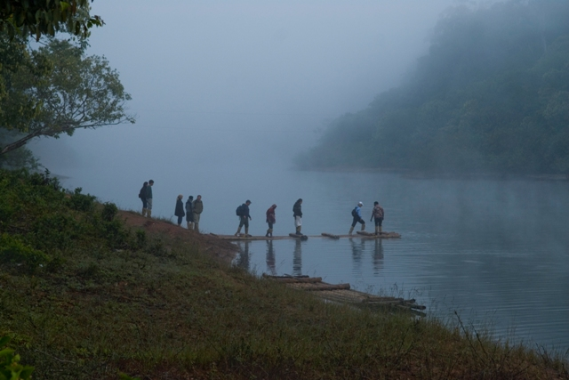
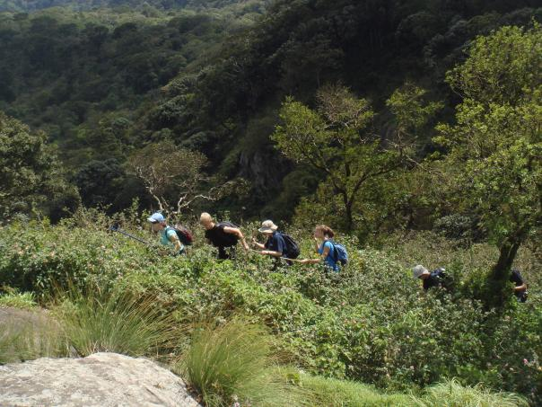
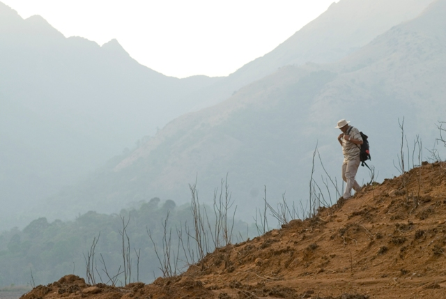
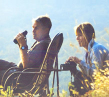

Kerala for the Adventure Enthusiasts
Adventure is all about taking on nature in its raw.
Taming its twists and turns, Its rocky paths. Its highs and lows. Its rapids. Its slow currents. Its calm and Its fury.
Come, the trip of your life beckons.
The magnetic beauty of the majestic mountains donning the Western Ghats and the emerald blue-green waters of the Arabian Sea blending in a kind of exotic harmony with the natural forests and their amazing flora and fauna invite millions of people to Kerala. This perfect setting lures adventure enthusiasts to indulge in adrenaline-driven activities.
Snorkeling Trip In Kochi
Snorkeling in Kochi is a must do, especially if you are an adventure lover. Kerala is home to an abundance of lovely nature related landscapes. Nothing exemplifies this better than the beaches that can be found in places like Kovalam and Kochi. Kochi has a number of beach related activities for tourists to indulge in. Boating, dolphin watching and a number of such experiences can be had here. However, snorkeling in Kochi is perhaps one of the lesser known activities as it takes place only in one area. A Kochi snorkeling trip is an experience that can introduce you to a world hitherto unexplored.
Bamboo Rafting (Periyar Tiger Reserve), Thekkady
Thekkady or Periyar, as it is sometimes known, is famous for its backwaters. And bamboo rafting in Thekkady is one activity that lets you witness the beauty of backwaters at its best!
This activity is organized in the Periyar Wildlife Sanctuary, on the Periyar Lake, and is a part of a nature walk. On a tour to excursion bamboo rafting in Periyar National Park, you will accompanied by four guides. There is also an armed guard on the boat for everyone’s safety. The activity starts around 8 AM in the morning and the last ride takes place around 5 PM in the evening.

Kayaking in Alleppey
Kayaking in Alleppey is a must when you visit this backwaters heaven, where a number of small canals are located. Kayaking and canoeing in the backwaters of Alleppey offer a great experience to explore the beauty of the state. It is actually a very exciting thing to do in the Alleppey backwaters, ensconced right in the lap of mother nature. One can see palm and coconut trees on both sides of the canals and lush greenery all around. Although several houseboats are available in the backwaters of Alleppey, and staying in houseboats is pretty popular an activity
Paragliding In Munnar
Soar across the majestic skies of Munnar while paragliding in this hill town. You will not only get to enjoy the beautiful views of this hill town but will also be able to cool climates of this hilly landscape. Situated in the Western Ghats above located around 1600 meters above sea level, Munnar is the perfect spot to go paragliding.
Try tandem paragliding in Munnar where you don’t have to learn how to do it as trained pilots accompany you and glide you across the sky. Most of the paragliding sites in Munnar will start from the hilltop and land near the Munnar Engineering College.
Chembra Peak Trekking In Wayanad
Wayanad’s Chembra Peak is the highest one in the region and lies 2100 meters above sea level. Being the highest one, the Chembra Peak is visible from almost any point in Wayanad. From the base of the peak you can witness the clouds gliding by the top and prepare yourself for basking in these clouds when you reach the summit. A weekend will offer you enough time to explore this magnificent work of nature. Trailing through the misty hills, with myriad patterns of nature unfolding in front of you, when you reach the top you can enjoy a surreal 360 degree view of the entire region

Periyar Wildlife Sanctuary In Thekkady
Periyar Wildlife Sanctuary in Thekkady is located in Kerala. This national park and wildlife sanctuary is a protected area for elephants and tigers. It is located in the Pandalam Hills of the Western Ghats. The total protected area of this wildlife sanctuary covers an area of about 900 sq km. A vast variety of plants and animals can be found in the Periyar Wildlife Sanctuary. Visiting Periyar Wildlife Sanctuary proves to be a great retreat for the wildlife enthusiasts. Tourists can enjoy the jungle safari, which is managed by the local people. It is a great means to explore the wildlife of this place. Periyar Wildlife Sanctuary is home to about 1000 elephants and about 40 tigers.
Also, one can find wild boar, langur, sambar and various other animals in Periyar Wildlife Sanctuary. The Periyar river, which is the longest river in Kerala, covering a distance of about 250 kilometers, originates in Periyar Wildlife Sanctuary.
Rock Climbing And Rappelling in Munnar
Munnar’s hilly landscapes provide the perfect terrain for rock climbing and rappelling. Adventure enthusiasts can trek right up to the top of the misty peaks here and also hike off a steep cliff. This is one activity your entire group will enjoy as you will get an adrenaline rush like no other in one of the most charming hill stations!
Rappelling involves both mountaineering and rock climbing as you get to hike up a steep cliff using the right equipment. You will then dropped down a rock face vertically while attached to safety ropes.
Rock climbing is rampant all over Munnar and there are several places where you can this activity. One such place is the Tea Valley Resort that is situated in Pothamedu.

Off Roading in Ponmudi
A much sought-after venue for India's premier off-road events, Kerala has the right terrain to put your driving skills to the test. Rugged land, slushy trails, gentle canals, shallow river beds, dense forests, green valleys and mist-capped mountains...take them all on two wheelers or 4x4s of your choice. The boulder -filled terrain of Ponmudi in Thiruvananthapuram, the steep rocky cliffs and stream crossings of Peerumedu in Idukki district, the raw and rustic landscape of wayanad...Kerala presents immense possibilities for the adventurous.
Bird Watching in Thrissur
The abundance of greenery makes Kerala an avian paradise. Over 500 species of birds-both resident and migratory- can be found in the lush green tropical forests, numerous freshwater and brackish lakes and waterlogged paddy fields of the state. From the Kol lands (marshlands and open paddy fields) surrounding the town of Thrissur to the Thattekkad Bird Sanctuary in Ernakulam, Kerala abounds birding sites. November to February is the best time to spot migratory birds.
